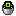

Getting Ship#
- Find one.
 Alien Evolution crash sites have a small chance (0.1%) of a wild Ship nearby.
Alien Evolution crash sites have a small chance (0.1%) of a wild Ship nearby. - Tame it with a Galvan Circuit. Feed it Upgrade Crystals to change its color.
- Carry it: sneak + right-click your Ship with an empty bucket to get a

Bucket of Ship.
More about Ship on the Mobs page.
Fusing and separating#
- Transform into the Chronosapien.
- Right-click your Ship. It wraps around you and you become the Upgrade fusion (the "Clockwork-Techno Bubble Fusion" advancement).
- To split up, use the Omnitrix's detransform or separate action. Ship pops back out next to you.
The fusion ends if your health drops to 2 hearts or less, so it can't carry you through a fight you're losing.
What changes#
 Clockwork
Clockwork
- Health
- +10
- Strength
- +9
- Defense
- +20
- Toughness
- +10
- Temporal Energy
- Wind the key to charge
- Timeflow length
- Set by the charge
- Rays
- Normal
- Last tree entry
- Temporal Mainspring
 Upgrade fusion
Upgrade fusion
- Health
- +20
- Strength
- +19
- Defense
- +30
- Toughness
- +20
- Temporal Energy
- Fills by itself
- Timeflow length
- No limit
- Rays
- Stronger versions of every ray
- Last tree entry
- Alliance Across Time
Clockwork's skill tree carries over. On top of it the fusion has Ship's Galvan powers. Without Ship, the Chronosapien Solo Skills power lets Clockwork switch some of them (Shoulder Bombs, Galvan Beam, Drill Hand, Leap and Sense) on by himself once the matching skill tree entries are unlocked.
Upgrade abilities#
Temporal Charge (Upgrade)#
The Upgrade's temporal core fills itself; no winding needed. Its timeflows have no time limit.
chrono_machina: · palladium:
Galvan Beam#
A Galvanic Mechamorph beam. Beam Color switches its color.
chrono_machina: · palladium:
Shoulder Bombs#
Fires explosive bombs from the shoulders, in two stages.
chrono_machina: · palladium:
Drill Hand#
Turns a hand into a drill (Tool Hands) for faster digging, with Drill Buff while it spins.
chrono_machina: · palladium:
Super Punch#
Launches a punch at range. Battle Mode switches the Upgrade into its fighting stance.
chrono_machina: · palladium:
Alliance Across Time#
A special passive for Ben 10 and Ben 23 teaming up against Maltruant. The last entry of the Upgrade skill tree.
chrono_machina: · palladium:dummy